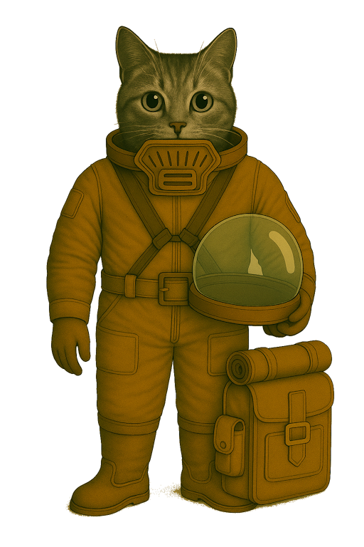
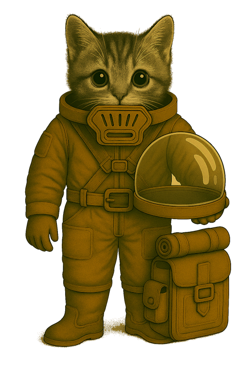

📄 Kadettenaußeneinsatzsystem – Typ CLx-01
- 🏷️ Gebrauchsbezeichnung: Anzug CLx-01
- 🗣️ Spitzname in der Truppe: Kadettenpellwurst



🧾 Ausrüstungseintrag
| 🆔 Artikel-ID | Bemerkung |
|---|---|
| CLA-1000001 | Kadetten · Kleidung · Außeneinsatzanzug |
| CLS-1000501 | Kadetten · Kleidung · Stiefel |
| CLH-1000301 | Kadetten · Kleidung · Helm |
| UAX-6010101IR | Universal · Atemsystem · Filtermodul; IN-kompatibel, regenerierbar |
🎯 Verwendung
- Außeneinsätze im Ausbildungsrahmen
- Technische Schulungen, Kartenübungen
- Orientierungsläufe unter Aufsicht
- Schleusennahe Reparaturen oder Kontrollgänge
- Einsätze bis ca. 10 Stunden Betriebsdauer mit einer Standardkassette Typ S
📄 Allgemeines
Der Außeneinsatzanzug CLx-01 ist das standardisierte Ausbildungsmodell für Mars-Kadetten bei leichten Außeneinsätzen unter kontrollierten Bedingungen. Er bietet Basisschutz bei Bewegungsübungen, technischen Schulungen und Schleusengängen und ist vollständig modular aufgebaut. Das System kommt ohne komplexe Lebenserhaltung aus, bleibt aber filter- und helmkompatibel mit den regulären Schnittstellen der Bodentruppen.
📄 Anzug
🛠️ Material und Aufbau
- Anzug (CLA-1000001)
- Gewebematerial:
- PMK-2 – PolyMars-Kadett®
- Schutzklasse: 1–2 · rotationsfähig · nicht schnittfest
Eigenschaften
- Abriebfest
- Thermoregulierend
- Staubabweisend
- Farbgebung: einfarbig Mars-Terrakotta (staubreduzierend, dienstlich genormt)
Konstruktionsmerkmale
- Dreilagiger Aufbau mit leichtem Kreuzgurtsystem
- Superhaft-Zonen zur Anbringung von Ausrüstungsmodulen
- Nottrennvorrichtung für Gürtel
- Integriertes Filtersystem mit folgenden Merkmalen:
- Integriertes Filtermodul im Helmkragen zur Aufnahme der Standardkassette Typ S (UAX-6010101IR)
- IN-kompatibel · systemübergreifend einsetzbar bei allen Nicht-Elite-Systemen
Stiefel (CLS-1000501)
- Material: STX-K1 – StepTex-Kadett®
- Schutzklasse: 1–2 · Flexibilität: mittel · Profilhaftung: gering
Eigenschaften
- Halbhoch
- Gelenkschutz integriert
- Antistatische Sohle
- Geeignet für Schleusen, Habitat- und Übungsbetrieb
Helm (CLH-1000301)
- Kuppel: VSL-2 – VisLite-PolyShield® (einteiliger Vollhelm)
- Schutzklasse: 2
Eigenschaften
- Einteilige Klarsichtkuppel aus splitterhemmendem VSL-2 PolyShield®
- Vollhelm ohne separates Visier – komplett geschlossenes Sichtsystem
- Passiv druckausgleichend, jedoch nicht vakuumtauglich
- Helmkuppel vollständig abnehmbar, mit seitlichen Riegeln gesichert
- Stoßresistenter Helmbasisring mit Anschluss an Filtereinheit
- Kein integriertes Funk- oder Sensorsystem
- Innenfassung mit verstellbaren Trägern und weicher Komfortpolsterung
- Speziell für den Ausbildungsbetrieb unter Marsbedingungen konzipiert
📡 Einsatzprofil
Geeignet für:
- Bewegungstrainings außerhalb der Station
- Wartungsaufgaben unter Anleitung
- Ausbildung in Schleusennähe
- Orientierungsübungen mit begrenzter Reichweite
Nicht empfohlen für:
- Vakuum, toxische oder offene Gefahrzonen
- Einsätze mit Funk- oder Sensoranforderungen
- Taktische oder interaktive Gefechtsübungen
🔍 Besonderheiten
- Seriennummernregistrierung aller Hauptkomponenten
- Keine persönliche Grundausstattung – Zuteilung durch Materialstelle
- Modular aufrüstbar (z. B. Lichtquelle, Kartenhalter)
- Nicht funktionsfähig für IN oder sensorische Kopplung
- Verwendung nur nach Freigabe durch Ausbilder oder Stationsleitung
- Kompatibel mit Standard-Filtersystem Typ S (UAX-6010101IR)